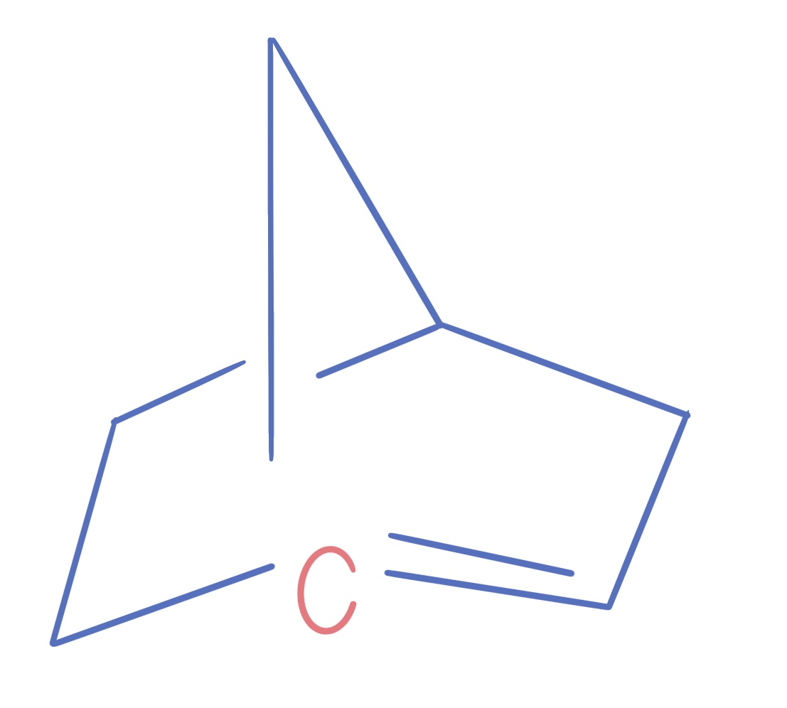

What is Bredt's Rule
Bredt’s rule in organic chemistry states that a double bond can not exist at the bridgehead position of a bicyclic compound unless one of the surrounding rings contains at least eight carbon atoms. A bridgehead atom is defined as an atom that is part of two or more rings in a polycyclic molecule. The reason that this can not occur is because of the size of the rings. For example, Trans cyclolakes can not be considered stable unless there are a minimum of 8 carbon atoms present in the ring. Because of the strain of the ring, the p-orbitals are pulled into a different plane so a p bond does not have the ability to form a pi bond.
The rule is named after Julius Bredt who presented this idea in 1902. The rule highlights the geometric strains in double bonds at a bridgehead.
However, modern day chemists have begun to test the validity of Bredt’s rule. UCLA chemists have discovered what are called anti-Bredt olefins which allow chemists to use them in reactions to form new compounds that were once impossible because of the rule. The lab used silylhalides with a fluoride to cause an elimination reaction that resulted in Anti-Bredt Olefins. By including other chemicals, they were able to trap the unstable anti-Bredt olefins that can be used to isolate products. The experiment concluded that anti-Bredt olefins can be created and trapped in order to make structures.